This part of the project was all about setup. I used ArUco tags to calibrate my camera and capture images of a scene from multiple angles. The tags provided known reference points in the images, allowing me to compute the camera's intrinsic and extrinsic parameters. I used OpenCV's ArUco module to detect the tags and estimate the camera pose for each image. This setup was crucial for the subsequent parts of the project, as accurate camera calibration is essential for 3D reconstruction tasks like NeRF. I roughly 100 photos. 50 of them were just images of a few aruco tags on a table from varying angles and distances and the other 50 were of a small plush toy with the tag sitting on its head. The latter 50 were all from roughly the same distance.
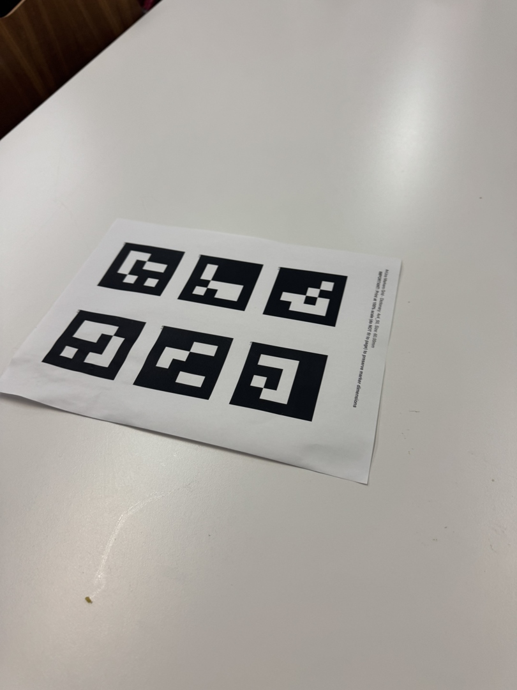
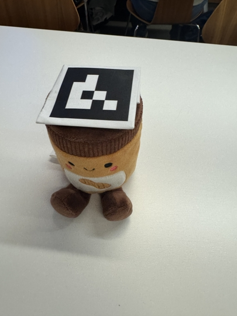
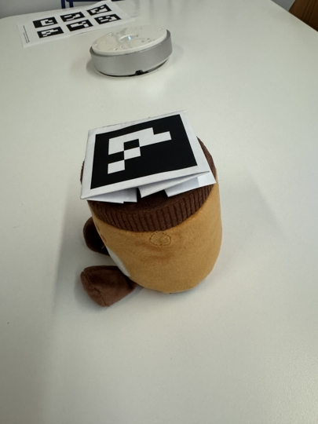
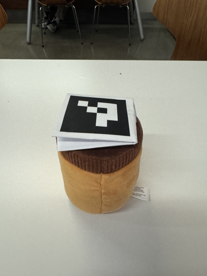
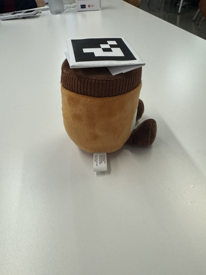
Some screenshots from viser showing the camera pose estimations
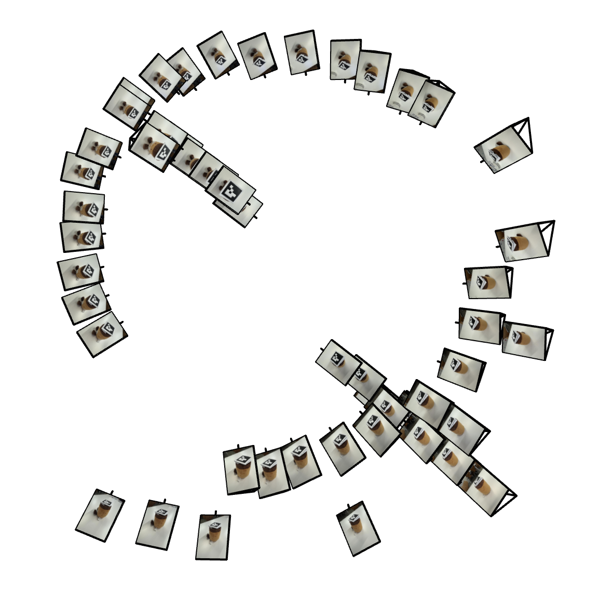
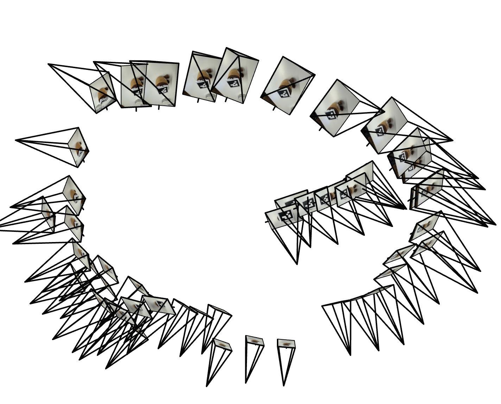
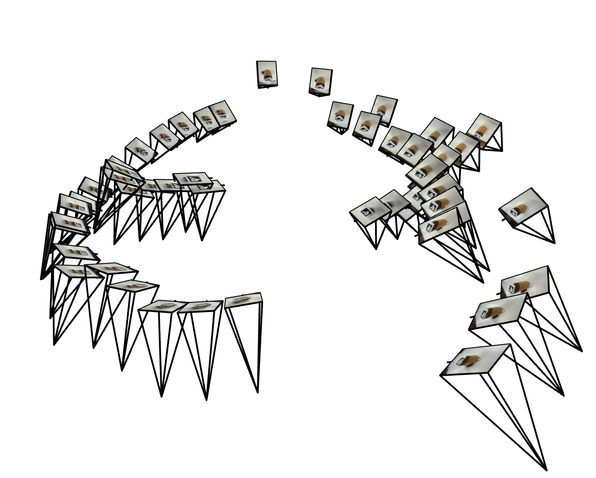
Before implementing the 3d NeRF, we started by trying to make an easier 2d version. We created a Multilayer perceptrol with Sinusoidal Positional Encoding that takes in 2d pixel coordinates and outputs the RGB 3-dimension color value.
1e-2 (as specified in LR)AdamMSELoss100010000x, y coordinates)L): 10in_dim * (2*L + 1) = 2 * (2*10 + 1) = 42ImageMLP):Linear(42, 256) -> ReLULinear(256, 256) -> ReLULinear(256, 3) -> SigmoidLinear layers.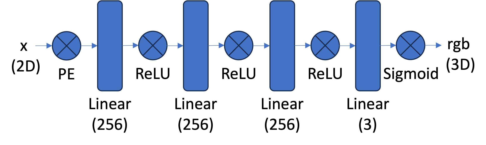
Here is the models output at every 100 iterations for two images
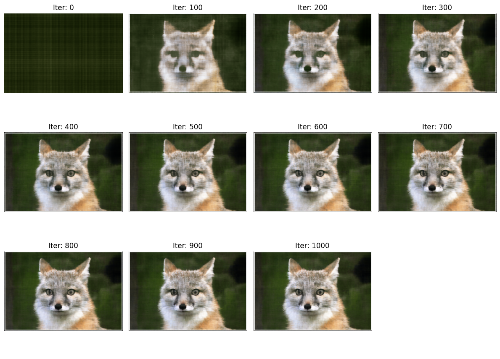
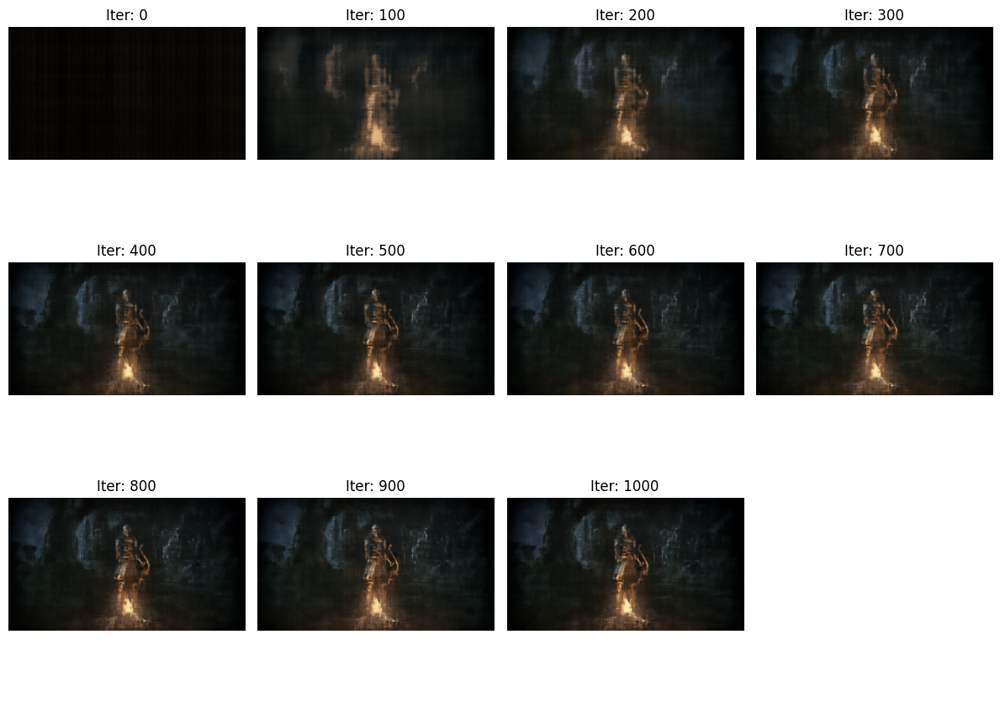
2 choices of max positional encoding frequency and 2 choices of width on the fox
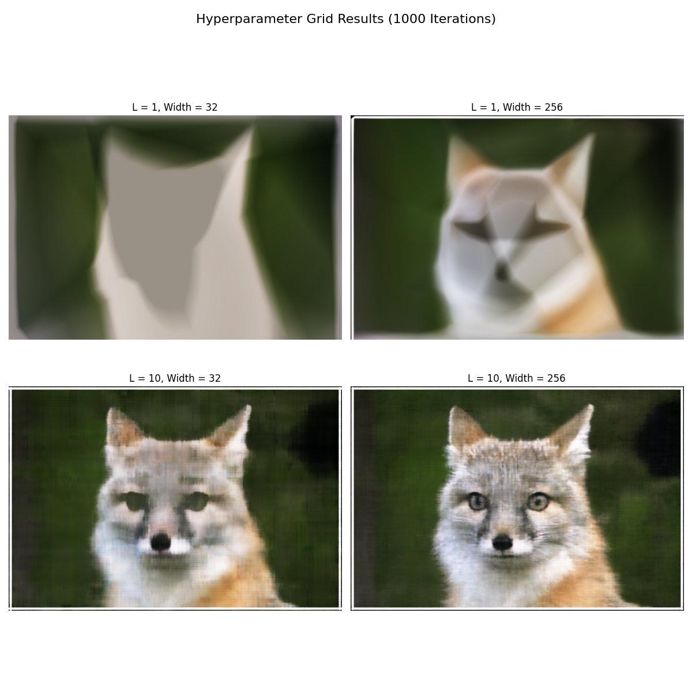
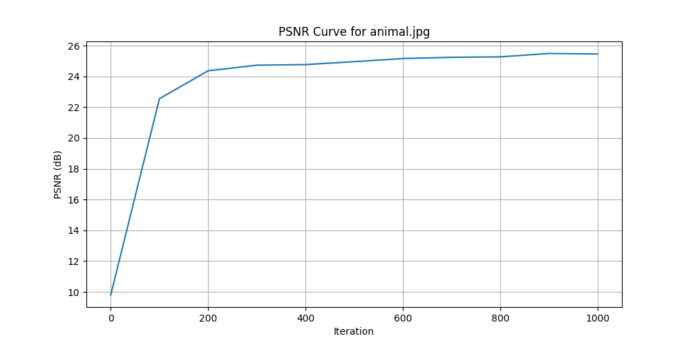
In this part, I implemented the full Neural Radiance Field (NeRF) model to reconstruct a 3D scene from multiple 2D images taken from different viewpoints. The model uses a similar architecture to the 2D version but takes in 3D coordinates and viewing directions to output color and density values. I trained the NeRF model using the images captured in Part 0, along with their corresponding camera poses. The training process involved sampling points along rays cast from the camera into the scene and optimizing the model to minimize the difference between the rendered colors and the actual pixel colors in the images. After training, I was able to render novel views of the scene by querying the NeRF model with new camera poses, demonstrating its ability to synthesize realistic images from unseen perspectives.
I implemented three PyTorch functions: pixel_to_camera (to invert the pinhole camera math), transform_c2w (to apply the 4x4 camera pose), and pixel_to_ray, which uses the first two to calculate the world-space origin and direction for a batch of pixels.
I created a RaysData class that pre-computes all rays and pixels for the entire dataset, allowing for very fast random batching during training. I also implemented sample_along_rays to generate n_samples points along each ray, with a perturb flag for stratified sampling.
This visualization confirms that the ray generation and sampling logic are correct before training. The black camera frustums show all the training camera poses loaded from the c2ws_train data. We can see they are all pointing correctly toward the origin, where the object is. The thin lines are 100 randomly sampled rays from the dataset, showing their origin and direction. The cloud of black dots represents the 64 3D points sampled along each of those rays, bounded by the NEAR and FAR distances. This shows where the model will actually be looking for the object.
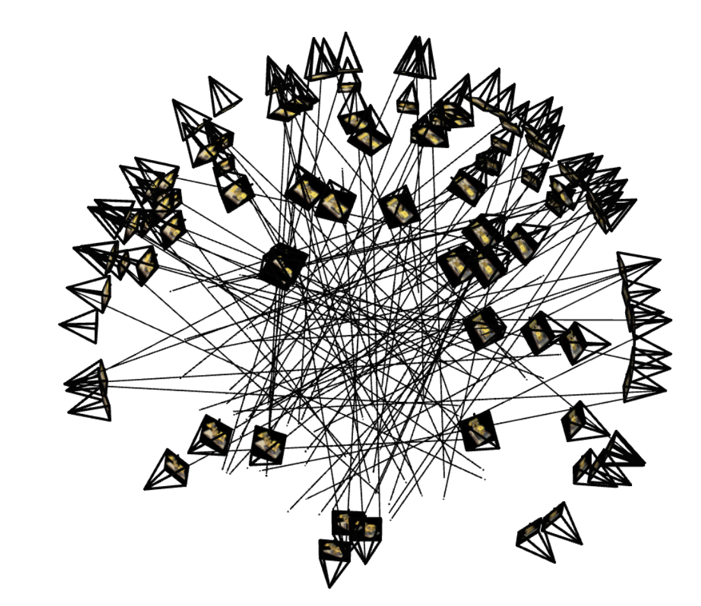
I built the NeRFMLP class in PyTorch to exactly match the spec's diagram. It uses two Positional Encoders (L=10 for xyz, L=4 for view_dir), a skip connection at the 5th layer, and two separate heads to output sigma (with a ReLU) and rgb (with a Sigmoid).
I implemented the volrend function to perform the discrete rendering equation. It calculates alpha (1−exp(−σ⋅δ)), then computes the transmittance T using torch.cumprod. The final color is the weighted sum of T * alpha * rgb.
Below is the training process of the model, showing the predicted images across iterations
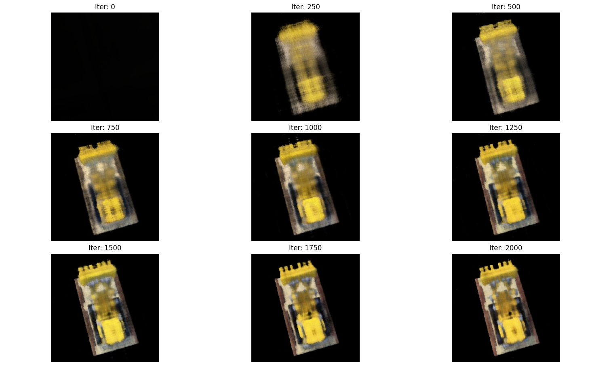
Here is the gif with near and far at 2 and 6, learning rate at 5e-4, 64 samples, batch size at 1024, and 2000 iterations
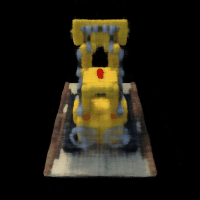
For this part, I experimented with training the NeRF model on my own captured dataset of a small plush toy with an ArUco tag on its head. I adjusted the NEAR and FAR clipping planes to 0.2 and 0.8, respectively, to better suit the scale of my scene. I followed the same training procedure as before, using the images and camera poses obtained from Part 0. After training, I rendered novel views of my scene. Unfortunately, I was not able to get a good result for my renders. I tried dozens of Near and Far combinations and retook the ArUco images many many times to try and get better camera poses, but was still not able to get anywhere near a recognizable render of the plush toy despite reaching a decent PSNR of about 24.5 dB and a loss of ~0.003.
I spent a good bit of time messing with Hyperparameters. I started with the same ones as the lego example (5e-4 LR, 64 samples, 1024 batch size) and tried varying Near and Far a lot. I also messed with the sample count but found that increasing it increased training time more than it improved my renders. I ended up going with a batch size of 10,000 from 1024 but in the end my renders still looked pretty bad.
Here is the render and the loss plot.
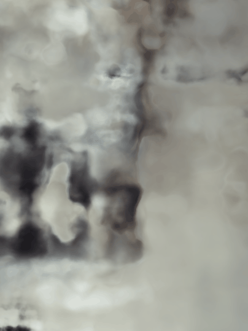
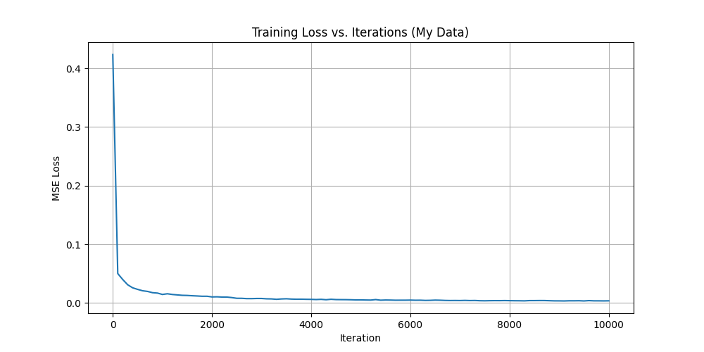
Here are some Intermediate renders at 0, 200, 500, 1000, 2000, 5000, and 10000 iterations respectively
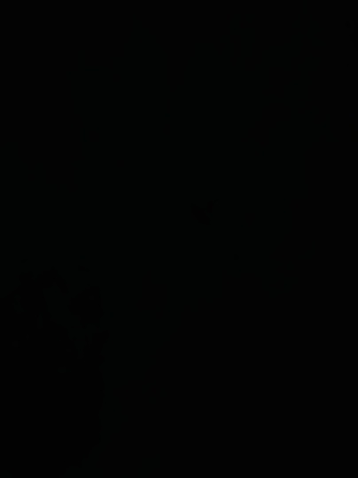
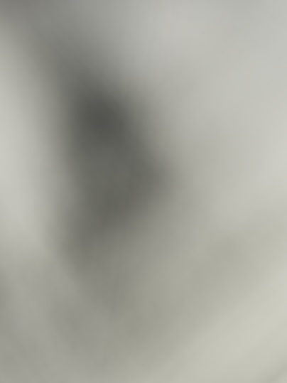
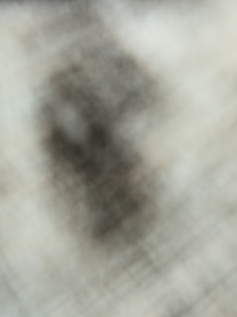
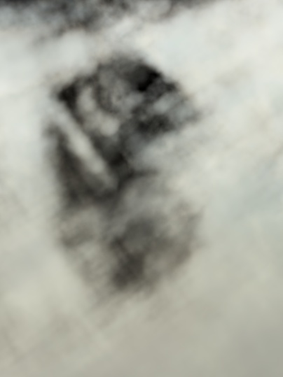
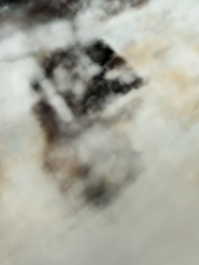
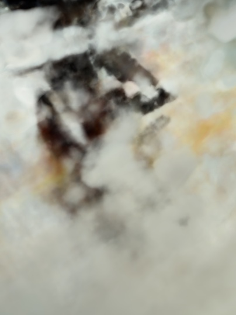
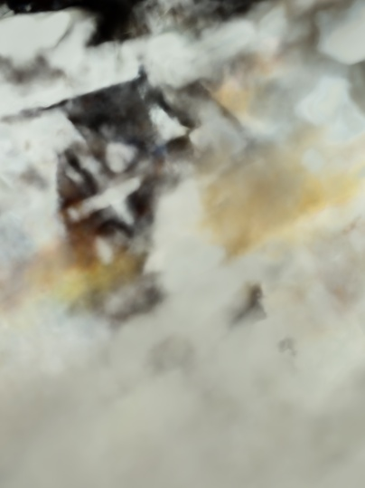